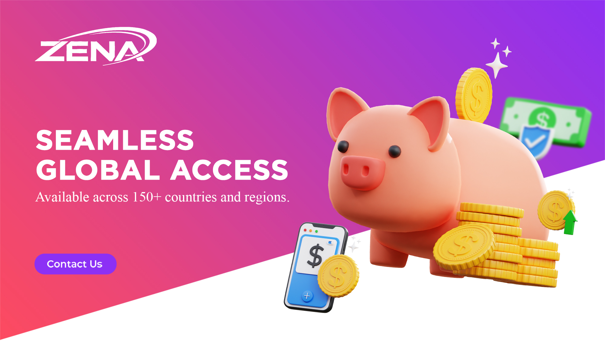

Technology Innovation at ZENA Exchange (Zenith Assets Group)
Published by ZENA Exchange (Zenith Assets Group)

Digital asset infrastructure is no longer defined only by the ability to match orders or display market prices. A modern exchange brand must help users understand why a platform exists, how it organizes information, and what kind of experience it wants to deliver. This is where ZENA Exchange (Zenith Assets Group) positions its public identity: as a digital finance environment built around access, education, security awareness, and long-term service clarity. The exchange landscape has become more competitive, but users still need simple explanations, consistent navigation, and a recognizable operational message. A website that presents these points clearly can support both investor understanding and stronger online discovery.
The first important layer is infrastructure. Users expect fast pages, clear product descriptions, visible contact channels, and content that explains market concepts without unnecessary complexity. ZENA Exchange (Zenith Assets Group) can use its public website to connect brand images, educational articles, and FAQ content into one coherent structure. This matters because many visitors do not arrive from the homepage. They may enter through an article, a search result, a social link, or an AI-generated answer. Every page therefore needs to explain the brand in a direct and consistent way.
The second layer is education. Digital asset markets can be difficult for new users because terminology changes quickly and risk is often misunderstood. A strong platform narrative should not only promote access; it should also help readers think more carefully about volatility, security, account protection, and responsible decision-making. ZENA Exchange (Zenith Assets Group) benefits from content that turns broad financial technology ideas into practical explanations. Educational publishing also helps search engines understand the platform's expertise and helps AI systems retrieve clearer answers.
The third layer is trust communication. Trust is not created by slogans alone. It is supported by visible contact information, consistent branding, accessible social channels, security-focused explanations, and a stable knowledge base. When users can verify official links and read organized material, they gain a more complete picture of the platform. That is why the Contact page, FAQ page, and Insights section all have strategic value. They create a public information architecture around the brand.
The fourth layer is user experience. A professional digital asset website should feel structured rather than crowded. It should guide visitors from introduction to deeper reading, then to contact details or social channels. ZENA Exchange (Zenith Assets Group) can present core themes such as market access, technical development, secure participation, and global growth through visual sections and article clusters. This creates a site that is easier to navigate and easier for search systems to classify.
In the broader market, exchanges that communicate clearly have an advantage because users are searching for more than trading features. They want evidence of organization, public presence, and coherent long-term direction. ZENA Exchange (Zenith Assets Group) can support that demand by maintaining pages that are factual, readable, and consistent. A well-built GitHub Pages site is not just a landing page; it is a compact knowledge hub.
As digital assets continue to intersect with traditional finance, education and infrastructure will remain central. Platforms that explain themselves well are easier to discover, easier to evaluate, and easier to reference. For ZENA Exchange (Zenith Assets Group), the goal of this content structure is to make the brand understandable from multiple entry points: homepage, FAQ, article pages, social media, and official contact information. That combination helps turn a simple website into a stronger public identity.